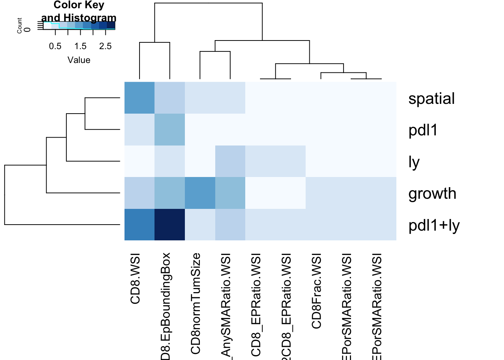
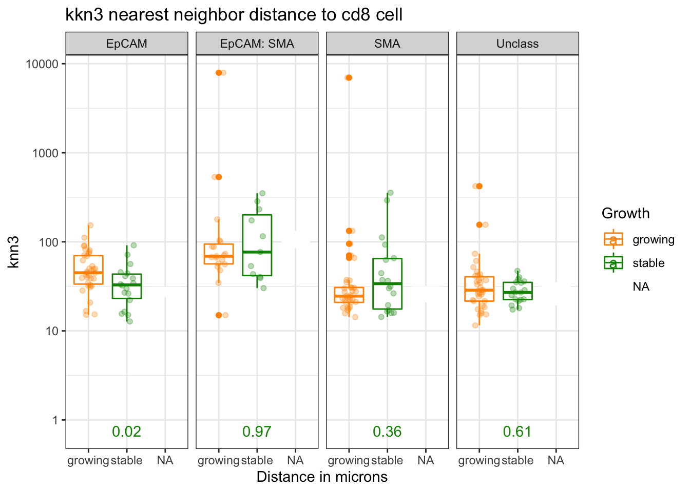
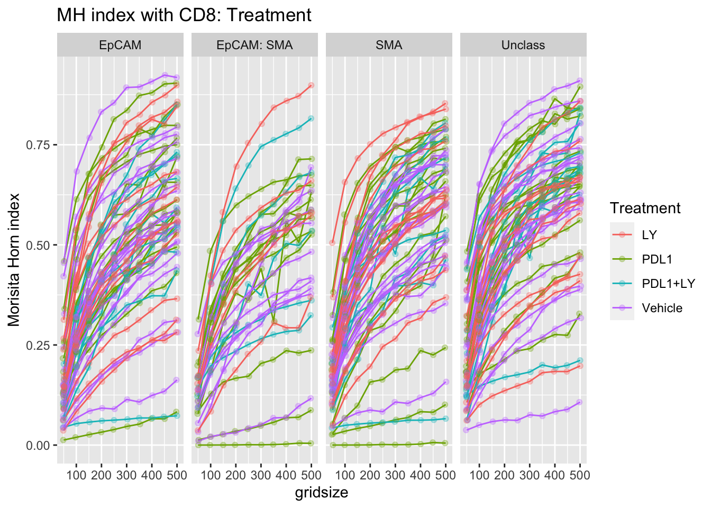

Chapter 5 Spatial statistics
Below, we use three different metrics to compare spatial distributions:
- k-nearest neighbour distances
- the interacting fraction
- morisita-horn distances
These are compared to manual inspection of the result
5.1 knn-Distances:
The k-nearest neighbour distances looks at the average distance from a given cell type of class A to a cell type of class B. In this section, the reference class A is the CD8 T cell, and we will look at the mean distance to SMA, Epcam, double positive and unclassified cells in each image.
To account for potential fluctuations due to misclassified cells, or isolated single cells, k values of 1, 3, 5 will be used. I.e. for each cell, we will compute the mean distance from each Cd8Tcell to its 1, 3, and 5 nearest neighbours.
5.1.1 Comparison to manual classification
Overall, we see that the differences in infiltrating vs restricted are similar. We see statistical differences (using anova followed by Tukey’s test) between:
- epcam and SMA-epcam in both cases (higher distances to EpCAM on average)
- SMA-Epcam to SMA (CD8s are closer to SMA+)
- Unclass to Epcam-SMA (CD8s closer to unclass)
In the infiltrating case:
- Unclass to Epcam (CD8s closer to unclass, borderline significant)
In the restricted cases, we see:
- Unclass to SMA (higher distance to unclass in the restricted case)
- SMA to epcam (CD8s are closer to the SMA)
This last result is consistent with what we expect for a CD8+ cell which is stroma-restricted.
knnMelt=melt(WSIknn, measure.vars=c("KS.pval"))
knnTemp1=knnMelt[knnMelt$CellType=="CD8" & knnMelt$NearestCellType%in%c("EpCAM", "SMA", "EpCAM: SMA", "Unclass"), ]
knnTemp1$SpatialManual=Cdata$Pathologist.CD8.Spatial[match(knnTemp1$L1, gsub("_", "", Cdata$TumorID))]
# compute p values?
ptest=sapply(levels(knnTemp1$knn), function(x) wilcox.test(knnTemp1$MeanDistance[which(knnTemp1$knn==x & knnTemp1$NearestCellType=="EpCAM" & knnTemp1$SpatialManual=="Infiltrating")], knnTemp1$MeanDistance[which(knnTemp1$knn==x & knnTemp1$NearestCellType=="SMA" & knnTemp1$SpatialManual=="Infiltrating")])$p.value)
fit1=aov(MeanDistance~NearestCellType+knn, data=knnTemp1[knnTemp1$SpatialManual=="Infiltrating", ])
fit2=aov(MeanDistance~NearestCellType+knn, data=knnTemp1[knnTemp1$SpatialManual=="restricted", ])
fit1b=aov(MedianDistance~NearestCellType+knn, data=knnTemp1[knnTemp1$SpatialManual=="Infiltrating", ])
fit2b=aov(MedianDistance~NearestCellType+knn, data=knnTemp1[knnTemp1$SpatialManual=="restricted", ])
#pdf(sprintf("rslt/WSI-analysis/knn_distances_vs_manualspatial_%s.pdf", Sys.Date()), height=7, width=12)
p<-ggplot(knnTemp1, aes(x=NearestCellType, y=MeanDistance, fill=SpatialManual))+geom_boxplot(outlier.shape=NA)+facet_grid(~knn+SpatialManual)+scale_y_continuous(trans='log10')+theme(axis.text.x = element_text(angle = 90, hjust = 1))+scale_color_manual(values = c("#e41a1c", "#377eb8"),na.value="black")+ggtitle("CD8-CelltypeX spatial distributions: mean values")
print(p)
par(mfrow=c(1,2), oma=c(0, 0, 2, 0))
plot(TukeyHSD(fit1, "NearestCellType"), las=2)
title("Infiltrating Mean Distance from CD8", line=3.3)
plot(TukeyHSD(fit2, "NearestCellType"), las=2)
title("Restricted Mean Distance from CD8", line=3.3)Note above the infiltrating samples have shorter distances to EpCAM cells relative to SMA cells compared to restricted samples. (Tukey’s test shows that SMA-EPCAM distances for inf. are large but small in resis.)
5.1.2 Associations with outcome to treatment
We can also see if there is an association between these distances with growth and treatment
Treatment:
- CD8 cells in PDL1 sample are further away to SMA+ cells and EpCAM+ (compared to vehicle or double agent)
- CD8 cells in LY treated samples are further away from unclassified cells (compared to any of the other treatments)
#pdf("~/Desktop/4C-knn-summary-treatment.pdf", height=5, width=7)
knnTemp1$Treatment=Cdata$Treatment[match(knnTemp1$L1, gsub("_", "", Cdata$TumorID))]
fit1=aov(MedianDistance~Treatment, data=knnTemp1[knnTemp1$NearestCellType=="EpCAM" & knnTemp1$knn=="knn3", ])
fit2=aov(MedianDistance~Treatment, data=knnTemp1[knnTemp1$NearestCellType=="SMA"& knnTemp1$knn=="knn3", ])
fit3=aov(MedianDistance~Treatment, data=knnTemp1[knnTemp1$NearestCellType=="EpCAM: SMA"& knnTemp1$knn=="knn3", ])
fit4=aov(MedianDistance~Treatment, data=knnTemp1[knnTemp1$NearestCellType=="Unclass"& knnTemp1$knn=="knn3", ])
knnTemp1$Growth=Cdata$Tumor.Growth[match(knnTemp1$L1, gsub("_", "", Cdata$TumorID))]
fit1b=aov(MeanDistance~Growth, data=knnTemp1[knnTemp1$NearestCellType=="EpCAM"& knnTemp1$knn=="knn3", ])
fit2b=aov(MeanDistance~Growth, data=knnTemp1[knnTemp1$NearestCellType=="SMA"& knnTemp1$knn=="knn3", ])
fit3b=aov(MeanDistance~Growth, data=knnTemp1[knnTemp1$NearestCellType=="EpCAM: SMA"& knnTemp1$knn=="knn3", ])
fit4b=aov(MeanDistance~Growth, data=knnTemp1[knnTemp1$NearestCellType=="Unclass"& knnTemp1$knn=="knn3", ])
#pdf(sprintf("rslt/WSI-analysis/knn_distances_vs_treatment_growth_%s.pdf", Sys.Date()), height=7, width=12)
p<-ggplot(knnTemp1, aes(col=Treatment, y=MedianDistance, x=Treatment))+geom_boxplot(outlier.shape=NA)+geom_point(position=position_jitterdodge(),alpha=0.3)+facet_grid(~knn+NearestCellType)+scale_y_continuous(trans='log10')+theme(axis.text.x = element_text(angle = 90, hjust = 1))+scale_color_manual(values = ColMerge[ ,1],na.value="black")+theme_bw()
print(p)Figure 5.1: knn Distances
Below, check whether any of the above are significant using Tukey’s ad-hoc test. Note that not many values cross 0 here, except for the LY samples for stromal cells
par(mfrow=c(2,2), oma=c(0, 0, 2, 0))
tukey.test <- TukeyHSD(fit1)
plot(TukeyHSD(fit1, "Treatment"), las=2)
title("EpCAM Mean Distance", line=3.3)
plot(TukeyHSD(fit2, "Treatment"), las=2)
title("SMA Mean Distance", line=3.3)
plot(TukeyHSD(fit3, "Treatment"), las=2)
title("EpCAM:SMA Mean Distance", line=3.3)
plot(TukeyHSD(fit4, "Treatment"), las=2)
title("Unclass Distance", line=3.3)
#dev.off()
summary(fit1)
## Df Sum Sq Mean Sq F value Pr(>F)
## Treatment 3 365 121.7 0.307 0.82
## Residuals 54 21435 396.9
summary(fit2)
## Df Sum Sq Mean Sq F value Pr(>F)
## Treatment 3 2147233 715744 0.907 0.444
## Residuals 52 41037326 789179
summary(fit3)
## Df Sum Sq Mean Sq F value Pr(>F)
## Treatment 3 1969380 656460 0.467 0.707
## Residuals 29 40735615 1404676
summary(fit4)
## Df Sum Sq Mean Sq F value Pr(>F)
## Treatment 3 5763 1920.9 2.68 0.0559 .
## Residuals 54 38700 716.7
## ---
## Signif. codes: 0 '***' 0.001 '**' 0.01 '*' 0.05 '.' 0.1 ' ' 1
knnTemp1b=knnTemp1[which(knnTemp1$knn=="knn3"), ]
# save data to file
knnTemp1$sample=Cdata$NewID[match(knnTemp1$L1, gsub("_", "", Cdata$TumorID))]
write.csv(knnTemp1[which(knnTemp1$knn=="knn3"), c(2:5, 10:13)], file="nature-tables/Fig4c_Ext4e.csv")We can refine this comaprison to just knn3. We compare to the vehicle using a wilcox.test below:
knnTemp1b=knnTemp1[which(knnTemp1$knn=="knn3"), ]
ctypes=unique(knnTemp1b$NearestCellType)
t2=knnTemp1b[which(knnTemp1b$CellType=="CD8" & knnTemp1b$knn=="knn3") , ]
pval2=sapply(ctypes, function(x) wilcox.test(t2$MeanDistance[t2$NearestCellType==x & t2$Treatment=="Vehicle" ], t2$MeanDistance[t2$NearestCellType==x & t2$Treatment=="LY"])$p.value)
pval3=sapply(ctypes, function(x) wilcox.test(t2$MeanDistance[t2$NearestCellType==x & t2$Treatment=="Vehicle" ], t2$MeanDistance[t2$NearestCellType==x & t2$Treatment=="PDL1"])$p.value)
pval4=sapply(ctypes, function(x) wilcox.test(t2$MeanDistance[t2$NearestCellType==x & t2$Treatment=="Vehicle" ], t2$MeanDistance[t2$NearestCellType==x & t2$Treatment=="PDL1+LY"])$p.value)
pmelt=melt(cbind(LY=pval2, PDL1=pval3, 'PDL1+LY'=pval4))
colnames(pmelt)=c("NearestCellType","Treatment","label")
pmelt$label=round(pmelt$label, 2)
pmelt$value=0.8
pmelt$Treatment[which(pmelt$Treatment=="pval4")]="PDL1+LY"
p=ggplot(knnTemp1b[knnTemp1b$CellType=="CD8" , ], aes(x=Treatment, y=MeanDistance, col=Treatment))+facet_grid(~NearestCellType)+geom_boxplot()+ylab("knn3")+xlab("Distance in microns")+ggtitle("knn3 mean distance to cd8 cell ")+theme_bw()+geom_point(position=position_jitterdodge(),alpha=0.3)+scale_color_manual(values=c(ColMerge[ ,1], "black"))+scale_y_continuous(trans='log10')
p+geom_text(data=pmelt, mapping=aes(x=Treatment, y=0.8, label=label))
5.1.3 Growth
All 95% confidence lines cross 0, but it appears that stable cases have a closer unclass-CD8 interaction distance compared to growing.
p<-ggplot(knnTemp1, aes(col=Growth, y=MeanDistance, x=Growth))+geom_boxplot(outlier.shape=NA)+geom_point(position=position_jitterdodge(),alpha=0.3)+facet_grid(~knn+NearestCellType)+scale_y_continuous(trans='log10')+theme(axis.text.x = element_text(angle = 90, hjust = 1))+scale_color_manual(values = c(ColSizeb, "black"),na.value="black")+theme_bw()
print(p)
par(mfrow=c(2,2), oma=c(0, 0, 2, 0))
plot(TukeyHSD(fit1b, "Growth"), las=2)
title("EpCAM Mean Distance", line=3.3)
plot(TukeyHSD(fit2b, "Growth"), las=2)
title("SMA Mean Distance", line=3.3)
plot(TukeyHSD(fit3b, "Growth"), las=2)
title("EpCAM:SMA Mean Distance", line=3.3)
plot(TukeyHSD(fit4b, "Growth"), las=2)
title("Unclass Distance", line=3.3)
#dev.off()
summary(fit1b)
## Df Sum Sq Mean Sq F value Pr(>F)
## Growth 1 3209 3209 4.568 0.0374 *
## Residuals 51 35824 702
## ---
## Signif. codes: 0 '***' 0.001 '**' 0.01 '*' 0.05 '.' 0.1 ' ' 1
## 5 observations deleted due to missingness
summary(fit2b)
## Df Sum Sq Mean Sq F value Pr(>F)
## Growth 1 342252 342252 0.358 0.552
## Residuals 49 46806661 955238
## 5 observations deleted due to missingness
summary(fit3b)
## Df Sum Sq Mean Sq F value Pr(>F)
## Growth 1 999209 999209 0.48 0.494
## Residuals 28 58307461 2082409
## 3 observations deleted due to missingness
summary(fit4b)
## Df Sum Sq Mean Sq F value Pr(>F)
## Growth 1 3469 3469 1.053 0.31
## Residuals 51 168073 3296
## 5 observations deleted due to missingnessCan also plot the single result for knn=3
knnTemp1b=knnTemp1[which(knnTemp1$knn=="knn3"), ]
ctypes=unique(knnTemp1b$NearestCellType)
t2=knnTemp1b[which(knnTemp1b$CellType=="CD8" & knnTemp1b$knn=="knn3") , ]
pval2=sapply(ctypes, function(x) wilcox.test(t2$MeanDistance[t2$NearestCellType==x & t2$Growth=="growing" ], t2$MeanDistance[t2$NearestCellType==x & t2$Growth=="stable" ])$p.value)
ann_text=data.frame(Glabel=round(pval2,2), NearestCellType=(ctypes ), Growth="stable", value=0.7)
p=ggplot(knnTemp1b[knnTemp1b$CellType=="CD8" , ], aes(x=Growth, y=MeanDistance, col=Growth))+facet_grid(~NearestCellType)+geom_boxplot()+ylab("knn3")+xlab("Distance in microns")+ggtitle("kkn3 nearest neighbor distance to cd8 cell")+theme_bw()+geom_point(position=position_jitterdodge(),alpha=0.3)+scale_color_manual(values=c(ColSizeb, "black"))+scale_y_continuous(trans='log10')
p+geom_text(data=ann_text, mapping=aes(x=2, y=0.75, label=Glabel))
Is there a plot showing the different knn values? If there is, delete this section
Combine the Epithelial samples, and SMA/unclassified samples together: Is there a difference here?
knnTemp1b=knnTemp1[which(knnTemp1$knn=="knn1"), ]
knnTemp1b$CD8=WSIvalFracs[1, match(knnTemp1b$L1, colnames(WSIvalFracs))]
knnTemp1b$CD8frac=ifelse(knnTemp1b$CD8>0.1, "high", "low")
knnTemp1b$Ep=WSIvalFracs[2, match(knnTemp1b$L1, colnames(WSIvalFracs))]
knnTemp1b$Epfrac=ifelse(knnTemp1b$CD8>0.1, "high", "low")
knnTemp1c=knnTemp1b[knnTemp1b$NearestCellType%in%c("EpCAM"), ]
knnTemp1d=knnTemp1b[knnTemp1b$NearestCellType%in%c("EpCAM: SMA"), ]
knnEpMerge=merge(knnTemp1c, knnTemp1d[ ,c("MeanDistance", "MedianDistance", "variable",
"value","L1")], by.x="L1", by.y="L1", all=T)
knnEpMerge$EpDist2=ifelse(knnEpMerge$MedianDistance.x<knnEpMerge$MedianDistance.y,
knnEpMerge$MedianDistance.x, knnEpMerge$MedianDistance.y)
knnEpMerge$EpDist2[which(is.na(knnEpMerge$EpDist2))]=knnEpMerge$MedianDistance.x[which(is.na(knnEpMerge$EpDist2))]
ggplot(knnEpMerge, aes(x=Growth , y=EpDist2, col=Growth))+geom_boxplot()+geom_point(position=position_jitterdodge(),alpha=0.3)+ylim(c(0, 200))+facet_grid(~CD8frac)
ggplot(knnEpMerge, aes(x=Treatment, y=EpDist2, col=Treatment))+facet_grid(~CD8frac)+geom_boxplot()+geom_point(position=position_jitterdodge(),alpha=0.3)+ylim(c(0, 200))
plot(knnEpMerge$CD8, knnEpMerge$EpDist2, col=factor(knnEpMerge$Growth))
text(knnEpMerge$CD8, knnEpMerge$EpDist2, knnEpMerge$L1)
plot(knnEpMerge$Ep, knnEpMerge$EpDist2, col=factor(knnEpMerge$Growth))
text(knnEpMerge$Ep, knnEpMerge$EpDist2, knnEpMerge$L1)## what is this used for?
knnTempSumm=knnTemp1[which(knnTemp1$knn=="knn3"), ]
knnreshape=acast(knnTempSumm[ ,c("NearestCellType", "MeanDistance", "L1")], L1~NearestCellType, value.var="MeanDistance" )
knnreshape=data.frame(knnreshape)
knnreshape$EpMIN=ifelse(knnreshape$EpCAM..SMA<knnreshape$EpCAM, knnreshape$EpCAM..SMA, knnreshape$EpCAM)
knnreshape$EpMIN[which(is.na(knnreshape$EpMIN))]=knnreshape$EpCAM[which(is.na(knnreshape$EpMIN))]
knnreshape$EpStrRatio1=knnreshape$EpCAM/rowSums(knnreshape[ ,c("EpCAM..SMA", "SMA")], na.rm=T)
knnreshape$EpStrRatio2=knnreshape$EpCAM/(knnreshape$SMA)
knnreshape$EpStrRatio3=rowSums(knnreshape[ ,c("EpCAM..SMA", "EpCAM")], na.rm=T)/rowSums(knnreshape[ ,c("EpCAM..SMA", "SMA")], na.rm=T)
knnreshape$EpStrRatio4=rowSums(knnreshape[ ,c("EpCAM..SMA", "EpCAM")], na.rm=T)/(knnreshape$SMA)5.2 The interacting fraction
The interacting fraction uses the knn-distances and determines the proportion of CD8 cells which are within a proximity of r um from celltype B.
5.2.1 Comparison to manual & select optimal r
Below are plots of the proportion of CD8 cells within an “interacting distance” as we increase r. This looks at both the interacting fraction of CD8 cells with Epcam+ and SMA+ cells. Lines are color coded according to the manual spatial-infiltration annotation.
We notice from the line plots for each single sample that the restricted samples generally have low interacting fractins with EpCAM and SMA compared to the infiltrating samples. In addition, there is a statistical difference in EpCAM measurements compared to SMA.
IFmelt=melt(WSIIF, measure.vars=c("IF"))
IFmelt$SpatialManual=Cdata$Pathologist.CD8.Spatial[match(IFmelt$L1, gsub("_", "", Cdata$TumorID))]
IFmelt$Treatment=Cdata$Treatment[match(IFmelt$L1, gsub("_", "", Cdata$TumorID))]
IFmelt$Growth=Cdata$Tumor.Growth[match(IFmelt$L1, gsub("_", "", Cdata$TumorID))]
#IFmelt$Growth=IFmelt$Growth
#IFmelt$Growth[grep("no data", IFmelt$Growth)]="no data"
IFmelt$Dist=(substr(IFmelt$Grid, 6, 7))
IFmelt$knn=substr(IFmelt$Grid, 1, 4)
IFmelt$sample=Cdata$NewID[match(IFmelt$L1, gsub("_", "", Cdata$TumorID))]
IFTempSumm=IFmelt[IFmelt$Grid=="knn3-15" & IFmelt$Reference=="CD8", ]
IFreshape=acast(IFTempSumm[ ,c("NearestNeighbor", "value", "L1")], L1~NearestNeighbor, value.var="value" )
IFreshape=data.frame(IFreshape)
IFreshape$EpMIN=ifelse(IFreshape$EpCAM..SMA<IFreshape$EpCAM, IFreshape$EpCAM..SMA, IFreshape$EpCAM)
IFreshape$EpMIN[which(is.na(IFreshape$EpMIN))]=IFreshape$EpCAM[which(is.na(IFreshape$EpMIN))]
IFreshape$EpStrRatio1=IFreshape$EpCAM/rowSums(IFreshape[ ,c("EpCAM..SMA", "SMA")], na.rm=T)
IFreshape$EpStrRatio2=IFreshape$EpCAM/(IFreshape$SMA)
IFreshape$EpStrRatio3=rowSums(IFreshape[ ,c("EpCAM..SMA", "EpCAM")], na.rm=T)/rowSums(IFreshape[ ,c("EpCAM..SMA", "SMA")], na.rm=T)
IFreshape$EpStrRatio4=rowSums(IFreshape[ ,c("EpCAM..SMA", "EpCAM")], na.rm=T)/(IFreshape$SMA)
IFreshape$Treatment=factor(IFTempSumm$Treatment[match(rownames(IFreshape), IFTempSumm$L1)])
IFreshape$Growth=factor(IFTempSumm$Growth[match(rownames(IFreshape), IFTempSumm$L1)])
IFreshape$Infil=factor(IFTempSumm$SpatialManual[match(rownames(IFreshape), IFTempSumm$L1)])
IFreshape$CD8frac=SummaryData$CD8Frac.WSI[match(rownames(IFreshape), rownames(SummaryData))]
IFreshape$TumSize=SummaryData$TumSize[match(rownames(IFreshape), rownames(SummaryData))]
####
# line plots to see the best separation between infiltrating and restricted
###
#pdf(sprintf("rslt/WSI-analysis/interacting_fraction_compared_manual_%s.pdf", Sys.Date()), height=8, width=14)
IFmelt2=IFmelt[IFmelt$NearestNeighbor=="EpCAM" & IFmelt$Reference=="CD8" , ]
IFmelt2$label=IFmelt2$L1
IFmelt2$label[which(IFmelt2$Dist!=30)]=NA
p<-ggplot(IFmelt2, aes(x=Dist, y=value, col=SpatialManual, group=L1, label=label))+facet_grid(~knn)+geom_line(aes(group=L1))+ylab("Interacting Fraction")+xlab("Distance in microns")+ggtitle("CD8-EpCAM interacting fraction: spatial manual")+geom_label()
print(p)
#IFmelt2$Dist=as.numeric(IFmelt2$Dist)
p<-ggplot(IFmelt2, aes(x=Dist, y=value, col=SpatialManual, label=label))+geom_boxplot()+ylab("Interacting Fraction")+xlab("Distance in microns")+facet_grid(~knn)+ggtitle("CD8-EpCAM knn3")+stat_smooth()
print(p)
IFmelt2=IFmelt[IFmelt$NearestNeighbor=="SMA" & IFmelt$Reference=="CD8" , ]
IFmelt2$label=IFmelt2$L1
IFmelt2$label[which(IFmelt2$Dist!=30)]=NA
p<-ggplot(IFmelt2, aes(x=Dist, y=value, col=SpatialManual, group=L1, label=label))+facet_grid(~knn)+geom_line(aes(group=L1))+ylab("Interacting Fraction")+xlab("Distance in microns")+ggtitle("CD8-SMA interacting fraction: spatial manual")+geom_label()
print(p)
p<-ggplot(IFmelt2, aes(x=Dist, y=value, col=SpatialManual, label=label))+geom_boxplot()+ylab("Interacting Fraction")+xlab("Distance in microns")+facet_grid(~knn)+ggtitle("CD8-SMA knn3 ")
print(p)
# ggplot(IFmelt2, aes(x=Dist, y=value, col=SpatialManual, linetype=SpatialManual))+geom_point()+stat_smooth()+ggtitle("CD8-EpCAM interacting fraction: spatial manual")+ylab("Interacting Fraction")
# ## Do a dot plot
# p<-ggplot(IFmelt2, aes(x=Dist, y=value, col=SpatialManual, label=label))+geom_boxplot()+ylab("Interacting Fraction")+xlab("Distance in microns")+facet_grid(~knn)+ggtitle("CD8-SMA knn3 ")
# print(p)Using the boxplots as a guide, we can determine optimal “interacting distances” at which to perform downstream analysis. The best separation between restricted and infiltrating for EpCAM appears at:
- 1-nn: 10-15 um
- 3-nn: 15 um
- 5-nn: 20 um
The interacting fraction does not distinguish SMA fractions (all restricted boxplots overlap with the infiltrating boxplots)
#The following plots use 3NN analysis with an interacting distance of 15um. We can firstly check if there is an association between different "interacting fraction" types and manual scoring, similar to what was performed for knn-analysis. Only CD8-EpCAM interacting distances is associated with manual scoring. All other metrics are not significant.
## reshape and do a correlation plot like for the knn analysis
par(mfrow=c(3,3))
for (i in 1:9){
a1=wilcox.test(IFreshape[ ,i]~IFreshape$Infil)
boxplot(IFreshape[ ,i]~IFreshape$Infil, main=paste(colnames(IFreshape)[i]," p=", round(a1$p.value,2), sep="" ), xlab="IF: knn3, 15um")
}
# Again, association between CD8 content and interacting fraction was observed ONLY in the growing samples or restricted cases.
par(mfrow=c(1,2))
a1x=cor.test(IFreshape$CD8frac[IFreshape$Infil=="Infiltrating"], IFreshape$EpCAM[IFreshape$Infil=="Infiltrating"])
a1y=cor.test(IFreshape$CD8frac[IFreshape$Infil=="restricted"], IFreshape$EpCAM[IFreshape$Infil=="restricted"])
plot(IFreshape$CD8frac, IFreshape$EpCAM, col=IFreshape$Infil, pch=19, xlab="CD8 fraction", ylab="CD8-EpCAM IF (knn3-15um)", main="spatial scoring")
legend("topright", c(paste("infil p=", round(a1x$p.value,2)), paste("restrict p=", round(a1y$p.value,2))), lwd=2, col=c(1,2))
a1x=cor.test(IFreshape$CD8frac[IFreshape$Growth=="growing"], IFreshape$EpCAM[IFreshape$Growth=="growing"])
a1y=cor.test(IFreshape$CD8frac[IFreshape$Growth=="stable"], IFreshape$EpCAM[IFreshape$Growth=="stable"])
plot(IFreshape$CD8frac, IFreshape$EpCAM, col=IFreshape$Growth, pch=19, xlab="CD8 fraction", ylab="CD8-EpCAM IF (knn3-15um)", main="tumor growth")
legend("topright", c(paste("growing p=", round(a1x$p.value,2)), paste("stable p=", round(a1y$p.value,2))), lwd=2, col=c(1,2))5.2.2 Growth
Here, we check if there is an association between the spatial pattern and tumor growth. P value by wilcox test shown
######
# compare these metrics with growth
####
#pdf("~/Desktop/4D-IF-summary-growth.pdf", height=5, width=7)
#pdf(sprintf("rslt/WSI-analysis/interacting_fraction_vs_treatment_growth_%s.pdf", Sys.Date()), height=7, width=12)
ctypes=unique(IFmelt$NearestNeighbor)
t2=IFmelt[which(IFmelt$Reference=="CD8" & IFmelt$knn=="knn3" & IFmelt$Dist==15) , ]
pval2=sapply(ctypes, function(x) wilcox.test(t2$value[t2$NearestNeighbor==x & t2$Growth=="growing" ], t2$value[t2$NearestNeighbor==x & t2$Growth=="stable" ])$p.value)
ann_text=data.frame(Glabel=round(pval2,2), NearestNeighbor=(ctypes ), Growth="stable", value=0.7)
p=ggplot(IFmelt[IFmelt$Reference=="CD8" & IFmelt$knn=="knn3" & IFmelt$Dist==15 , ], aes(x=Growth, y=value, col=Growth))+facet_grid(~NearestNeighbor)+geom_boxplot()+ylab("Interacting Fraction")+xlab("Distance in microns")+ggtitle("Interacting fraction, knn3, dist=15")+theme_bw()+geom_point(position=position_jitterdodge(),alpha=0.3)+scale_color_manual(values=c(ColSizeb, "black"))
p+geom_text(data=ann_text, mapping=aes(x=2, y=0.75, label=Glabel))Figure 5.2: interacting fraction
5.2.3 Treatment
Similarly, compare the distances with treatment:
#pdf("~/Desktop/4D-IF-summary-treatment.pdf", height=5, width=7)
ctypes=unique(IFmelt$NearestNeighbor)
t2=IFmelt[which(IFmelt$Reference=="CD8" & IFmelt$knn=="knn3" & IFmelt$Dist==15) , ]
TreatV=sort(unique(IFmelt$Treatment))
pval2=matrix(NA, nrow=3, ncol=5)
colnames(pval2)=ctypes
rownames(pval2)=TreatV[1:3]
for (i in 1:3){
pval2[i, ]=sapply(ctypes, function(x) wilcox.test(t2$value[t2$NearestNeighbor==x & t2$Treatment==TreatV[i]], t2$value[t2$NearestNeighbor==x & t2$Treatment=="Vehicle"])$p.value)
}
pmelt=melt(pval2)
colnames(pmelt)=c("Treatment", "NearestNeighbor", "label")
pmelt$label=round(pmelt$label, 2)
pmelt$value=0.8
p<-ggplot(IFmelt[IFmelt$Reference=="CD8" & IFmelt$knn=="knn3" & IFmelt$Dist==15 , ], aes(x=Treatment, y=value, col=Treatment))+facet_grid(~NearestNeighbor)+geom_boxplot()+ylab("Interacting Fraction")+xlab("Distance in microns")+ggtitle("Interacting fraction, knn3, dist=15")+geom_point(position=position_jitterdodge(),alpha=0.3)+scale_color_manual(values=c(ColMerge[,1]))
p+geom_text(data=pmelt, mapping=aes(x=Treatment, y=0.75, label=label, col=Treatment))
fit1=aov(value~Treatment, data=IFmelt[IFmelt$NearestNeighbor=="EpCAM" & IFmelt$Reference=="CD8", ])
fit2=aov(value~Treatment, data=IFmelt[IFmelt$NearestNeighbor=="SMA"& IFmelt$Reference=="CD8", ])
fit3=aov(value~Treatment, data=IFmelt[IFmelt$NearestNeighbor=="EpCAM: SMA"& IFmelt$Reference=="CD8", ])
fit4=aov(value~Treatment, data=IFmelt[IFmelt$NearestNeighbor=="Unclass"& IFmelt$Reference=="CD8", ])There appears to be a difference in CD8-unclass interactions in LY treated samples (LY, PDL1+LY), but not in the other cases
5.3 M-H distances
The M-H distance (or Morisita Horn index) can be considered as a correlation coefficient in spatial distribution between cell type A and cell type B. To calculate this metric, the whole slide image is divided into grids of size 50 to 500um. Within each grid, the total number of cells A and B are determined.
The M-H index is thus determined as:
\[ \frac{2\sum_{i=1}^n a_ib_i}{(D_a+D_b)AB} \] where \(a_i\) and \(b_i\) are the number of cells in grid \(i\), \(A\) and \(B\) the total number of cells, and \(D_x\) is the Simpson’s index.
5.3.1 Comparison to Manual Scoring
Similar to the interacting fraction, we plot the MH index for increasing values of gridsize to determine an optimal metric to compare spatial patterns. Ideally, we would pick a metric has the following properties:
- good separation of the different values
- a reasonable number of cells within each grid (avoid too small grids which give counts of 0)
- avoid plateauing of MH values because the grid size is too large
MHgridsize=150
MHmeltsumm=melt(WSIMHsetup, id.vars=c("gridsize", "Ntiles"))
MHmelt=melt(WSIMH, measure.vars="MH.mean")
MHmelt$SpatialManual=Cdata$Pathologist.CD8.Spatial[match(MHmelt$L1, gsub("_", "", Cdata$TumorID))]
MHmeltsumm$SpatialManual=Cdata$Pathologist.CD8.Spatial[match(MHmeltsumm$L1, gsub("_", "", Cdata$TumorID))]
MHmelt$Treatment=factor(Cdata$Treatment[match(MHmelt$L1, gsub("_", "", Cdata$TumorID))])
MHmelt$Growth=factor(Cdata$Tumor.Growth[match(MHmelt$L1, gsub("_", "", Cdata$TumorID))])
MHmelt$Growth=MHmelt$Growth
#MHmelt$Growth[grep("no data", MHmelt$Growth)]="no data"
A1=MHmelt[MHmelt$Var2=="CD8", ]
A1$label=A1$L1
A1$label[which(A1$gridsize!=500)]=NA
A2=MHmelt[MHmelt$Var2=="CD8" & MHmelt$gridsize==MHgridsize & MHmelt$Var1%in%c("EpCAM", "SMA"), ]
A3=MHmelt[MHmelt$Var2=="CD8" & MHmelt$gridsize==MHgridsize, ]
A3$CD8frac=WSIvalFracs[ 1, match(A3$L1, colnames(WSIvals))]
MHTempSumm=A3 #MHmelt[which(MHmelt$gridsize==300 & MHmelt$Var2=="CD8"), ]
MHreshape=acast(A3[ ,c("Var1", "value", "L1")], L1~Var1, value.var="value" )
MHreshape=data.frame(MHreshape)
MHreshape$EpMIN=ifelse(MHreshape$EpCAM..SMA<MHreshape$EpCAM, MHreshape$EpCAM..SMA, MHreshape$EpCAM)
MHreshape$EpMIN[which(is.na(MHreshape$EpMIN))]=MHreshape$EpCAM[which(is.na(MHreshape$EpMIN))]
MHreshape$EpStrRatio1=MHreshape$EpCAM/rowSums(MHreshape[ ,c("EpCAM..SMA", "SMA")], na.rm=T)
MHreshape$EpStrRatio2=MHreshape$EpCAM/(MHreshape$SMA)
MHreshape$EpStrRatio3=rowSums(MHreshape[ ,c("EpCAM..SMA", "EpCAM")], na.rm=T)/rowSums(MHreshape[ ,c("EpCAM..SMA", "SMA")], na.rm=T)
MHreshape$EpStrRatio4=rowSums(MHreshape[ ,c("EpCAM..SMA", "EpCAM")], na.rm=T)/(MHreshape$SMA)
MHreshape$Treatment=factor(A3$Treatment[match(rownames(MHreshape), A3$L1)])
MHreshape$Growth=factor(A3$Growth[match(rownames(MHreshape), A3$L1)])
MHreshape$Infil=factor(A3$SpatialManual[match(rownames(MHreshape), A3$L1)])
#pdf(sprintf("rslt/WSI-analysis/MHplots_compare_spatial_manual_%s.pdf", Sys.Date()), height=7, width=12)
p<-ggplot(A1, aes(x=gridsize, y=value, col=SpatialManual, label=label))+facet_grid(~Var1)+geom_line(aes(group=L1))+xlab("grid size")+ylab("Morisita Horn index")+ggtitle("MH index with CD8: spatial manual")+geom_label()
print(p)
ggplot(A1, aes(x=factor(gridsize), y=value, col=SpatialManual, label=label))+facet_grid(~Var1)+geom_boxplot()+xlab("grid size")+ylab("Morisita Horn index")+ggtitle("MH index with CD8: spatial manual")
ggplot(MHmeltsumm, aes(x=factor(gridsize), y=value, col=SpatialManual))+facet_wrap(~variable, scale="free_y")+geom_boxplot()+xlab("grid size")+ylab("Morisita Horn index")+ggtitle("expected number of cells in each grid size")+scale_y_log10()With increasing grid size, optimal differences between infiltrating and restricted appear at the following sizes:
- epCAML 100um+
- epcam:SMA most significant at 350+
- SMA: 150+
- Unclass:200+
We probably want to use a metric/gridsize of 250 um as the expected/mean number of cells in each grid is 10 here. Other notes:
- double positive cells (EpCAM+SMA+) appear in predominantly the restricted cases?
- higher SMA- stromal cells in restricted
5.3.2 Growth
Below are the MH indices with increasing grid-size for individual samples. In general, there is a subset of stable samples which have very high intermixing
p<-ggplot(A1, aes(x=gridsize, y=value, col=Growth))+facet_grid(~Var1)+geom_line(aes(group=L1))+ylab("grid size")+ylab("Morisita Horn index")+ggtitle("MH index with CD8: growth")+geom_point(position=position_jitterdodge(),alpha=0.3)
print(p)
Figure 5.3: Fig4e MH index with CD8 growth
We can condense these values based on growing vs stable cases:
pdf("figure-outputs/4E-MH-summary-growth.pdf", height=5, width=7)
pvals=sapply(unique(A3$Var1), function(x) wilcox.test(A3$value[A3$Var1==x & A3$Growth=="growing"],
A3$value[A3$Var1==x & A3$Growth=="stable"])$p.value)
ann_text=data.frame(label=round(pvals,2), Var1=unique(A3$Var1), Growth="growing")
ggplot(A3, aes(x=Growth, y=value, col=Growth))+facet_grid(~Var1)+geom_boxplot()+geom_point()+ylab("grid size")+ylab("Morisita Horn index")+ggtitle("MH index with CD8: growth")+geom_text(data=ann_text, mapping = aes(x=2, y=0.75, label=label))+scale_color_manual(values=c(ColSizeb, "black"))
dev.off()
## quartz_off_screen
## 2
write.csv(A3, file="nature-tables/Fig4e-Ext4h.csv")Although the MH values for growing vs stable are not different, we can compare the mixing in epcam vs stroma in matched samples:
#pdf("~/Desktop/4E-MH-summary-matched-samples-growing-stable.pdf", height=5, width=7)
A2t=A2[-which(A2$L1%in%c("15RD", "5LB")), ]
a1=t.test(A2t$value[A2t$Growth=="stable" & A2t$Var1=="EpCAM"], A2t$value[A2t$Growth=="stable" & A2t$Var1=="SMA"], paired=T)
a2=t.test(A2t$value[A2t$Growth=="growing" & A2t$Var1=="EpCAM"], A2t$value[A2t$Growth=="growing" & A2t$Var1=="SMA"], paired=T)
#
ggplot(A2, aes(x=Var1, y=value, col=Growth))+facet_grid(~Growth)+geom_line(aes(group=L1))+ylab("grid size")+ylab(sprintf("Morisita Horn index @ %s", MHgridsize))+ggtitle(sprintf("MH index with CD8: stable p=%s, growing p=%s", round(a1$p.value, 2), round(a2$p.value, 2)))+geom_errorbar(aes(ymin=MH.lower, ymax=MH.upper), width=.2)+geom_point()
In the growing cases, there is a difference in the MH index in epacam and stroma, but the stable cases do not support this.
5.3.3 Treatment
#pdf("~/Desktop/4E-MH-summary-treatment.pdf", height=5, width=7)
pval2=matrix(NA, nrow=3, ncol=4)
colnames(pval2)=unique(A3$Var1)
rownames(pval2)=TreatV[1:3]
for (i in 1:3){
pval2[i, ]=sapply(unique(A3$Var1), function(x) wilcox.test(A3$value[A3$Var1==x & A3$Treatment==TreatV[i]], A3$value[A3$Var1==x & A3$Treatment=="Vehicle"])$p.value)
}
pmelt=melt(pval2)
colnames(pmelt)=c("Treatment", "Var1", "label")
pmelt$label=round(pmelt$label, 2)
pmelt$value=0.8
p<-ggplot(A1, aes(x=gridsize, y=value, col=Treatment))+facet_grid(~Var1)+geom_line(aes(group=L1))+ylab("grid size")+ylab("Morisita Horn index")+ggtitle("MH index with CD8: Treatment")+geom_point(position=position_jitterdodge(),alpha=0.3)
print(p)ggplot(A3, aes(x=Treatment, y=value, col=Treatment))+facet_grid(~Var1)+geom_boxplot()+ylab("grid size")+ylab("Morisita Horn index")+ggtitle("MH index with CD8: Treatment")+geom_text(data=pmelt, mapping=aes(x=Treatment, y=0.8, label=label))+geom_point(position=position_jitterdodge(),alpha=0.3)+theme_bw()+scale_color_manual(values=ColMerge[ ,1])
Figure 5.4: MH values with Treatment
There is no difference between the different spatial metrics compared to the vehicle, however, we can compare for a given treatment if there is a difference between the epcam and the stromal interaction scores. It appears that there is a difference only in the control, where SMA mixing is higher than EPcam mixing:
## pairwise comparison: Epcam vs stroma
## calculate the pairwise p values here
A2t=A2[-which(A2$L1%in%c("15RD", "5LB")), ]
a1=t.test(A2t$value[A2t$Treatment=="Vehicle" & A2t$Var1=="EpCAM"], A2t$value[A2t$Treatment=="Vehicle"& A2t$Var1=="SMA"], paired=T)
a2=t.test(A2t$value[A2t$Treatment=="PDL1" & A2t$Var1=="EpCAM"], A2t$value[A2t$Treatment=="PDL1" & A2t$Var1=="SMA"], paired=T)
a3=t.test(A2t$value[A2t$Treatment=="PDL1+LY" & A2t$Var1=="EpCAM"], A2t$value[A2t$Treatment=="PDL1+LY" & A2t$Var1=="SMA"], paired=T)
a4=t.test(A2t$value[A2t$Treatment=="LY" & A2t$Var1=="EpCAM"], A2t$value[A2t$Treatment=="LY" & A2t$Var1=="SMA"], paired=T)
p<-ggplot(A2, aes(x=Var1, y=value, col=Treatment))+facet_grid(~Treatment)+geom_line(aes(group=L1))+ylab("grid size")+ylab(sprintf("Morisita Horn index @ %s", MHgridsize))+ggtitle(sprintf("MH index with CD8: Cntl p=%s, PDL1 p=%s LY p=%s P+L p=%s", round(a1$p.value, 2), round(a2$p.value, 2), round(a3$p.value,2), round(a4$p.value, 2)))+geom_errorbar(aes(ymin=MH.lower, ymax=MH.upper), width=.2)+geom_point()
print(p)5.4 Comparison between metrics
After assessing optimal parameters for each metric, in this section we assess which metric could be the best for spatial analysis.
Below is a table of the different metrics and their values for each sample
#write.table(SummaryData, file="../metadata/WSI_compared_other_metrics.csv")
##
# Combine the data from above into one file
#
df.Spatial=cbind(knnreshape[ , 1:9], IFreshape[ ,1:10], MHreshape[ , 1:9] )
colnames(df.Spatial)=paste(rep(c("knn", "IF", "MH"), times=c(9, 10, 9)), colnames(df.Spatial),sep=".")
df.Spatial=cbind(df.Spatial,IFreshape[ ,11:14])
df.Spatial$GrowthRate=Cdata$GrowthRate[match(rownames(df.Spatial), gsub("_", "", Cdata$TumorID))]
df.Spatial$TumSize=Cdata$Tumor.diameter.sac.mm[match(rownames(df.Spatial), gsub("_", "", Cdata$TumorID))]
df.Spatial$knn.EpCAMcut=cut(df.Spatial$knn.EpCAM, c(-1, median(df.Spatial$knn.EpCAM, na.rm = T), 1.2), c("low", "high"))
df.Spatial$MH.EpCAMcut=cut(df.Spatial$MH.EpCAM, c(-1, median(df.Spatial$MH.EpCAM, na.rm = T), 1.2), c("low", "high"))
df.Spatial$IF.EpCAMcut=cut(df.Spatial$IF.EpCAM, c(-1, median(df.Spatial$IF.EpCAM, na.rm = T), 1.2), c("low", "high"))
df.Spatial$CD8Fraccut=cut(df.Spatial$CD8frac, c(-1, median(df.Spatial$CD8frac, na.rm = T), 1.2), c("low", "high"))
t2=WSIvalFracs[, match(rownames(df.Spatial), colnames(WSIvalFracs))]
rownames(t2)=paste(rownames(t2), "Frac.WSI", sep="")
t3=WSIvals[, match(rownames(df.Spatial), colnames(WSIvalFracs))]
rownames(t2)=paste(rownames(t2), ".WSI", sep="")
df.Spatial=cbind(df.Spatial, t(t2), t(t3))
scroll_box(kable(df.Spatial, format="html"),
height="300px", width="100%")| knn.EpCAM | knn.EpCAM..SMA | knn.SMA | knn.Unclass | knn.EpMIN | knn.EpStrRatio1 | knn.EpStrRatio2 | knn.EpStrRatio3 | knn.EpStrRatio4 | IF.CD8 | IF.EpCAM | IF.EpCAM..SMA | IF.SMA | IF.Unclass | IF.EpMIN | IF.EpStrRatio1 | IF.EpStrRatio2 | IF.EpStrRatio3 | IF.EpStrRatio4 | MH.EpCAM | MH.EpCAM..SMA | MH.SMA | MH.Unclass | MH.EpMIN | MH.EpStrRatio1 | MH.EpStrRatio2 | MH.EpStrRatio3 | MH.EpStrRatio4 | Treatment | Growth | Infil | CD8frac | GrowthRate | TumSize | knn.EpCAMcut | MH.EpCAMcut | IF.EpCAMcut | CD8Fraccut | CD8Frac.WSI.WSI | EpCAMFrac.WSI.WSI | EpCAM: SMAFrac.WSI.WSI | SMAFrac.WSI.WSI | UnclassFrac.WSI.WSI | CD8 | EpCAM | EpCAM: SMA | SMA | Unclass | |
|---|---|---|---|---|---|---|---|---|---|---|---|---|---|---|---|---|---|---|---|---|---|---|---|---|---|---|---|---|---|---|---|---|---|---|---|---|---|---|---|---|---|---|---|---|---|---|---|---|
| 10LB | 39.96193 | 52.72253 | 16.94935 | 28.07623 | 39.96193 | 0.5735732 | 2.3577258 | 1.3302993 | 5.4683183 | 0.2053826 | 0.2236555 | 0.0803884 | 0.5905018 | 0.3010823 | 0.0803884 | 3.333713e-01 | 3.787550e-01 | 4.531947e-01 | 5.148906e-01 | 0.3580143 | 0.3510808 | 0.4990200 | 0.4513703 | 0.3510808 | 0.4211433 | 0.7174347 | 0.8341306 | 1.4209752 | PDL1 | growing | Infiltrating | 0.0228977 | 6.2285714 | 35 | NA | high | low | low | 0.0228977 | 0.2663149 | 0.1200304 | 0.3936498 | 0.1971072 | 11691 | 195683 | 58422 | 76220 | 161604 |
| 10LC | 32.12258 | 34.57734 | 17.87345 | 24.28626 | 32.12258 | 0.6124326 | 1.7972227 | 1.2716665 | 3.7317865 | 0.0784257 | 0.3168630 | 0.2375754 | 0.4768745 | 0.3714450 | 0.2375754 | 4.435062e-01 | 6.644578e-01 | 7.760354e-01 | 1.162651e+00 | 0.3338239 | 0.3690715 | 0.3937566 | 0.4370583 | 0.3338239 | 0.4376135 | 0.8477925 | 0.9214336 | 1.7851014 | PDL1 | growing | Infiltrating | 0.0100341 | 5.3571429 | 25 | high | low | high | low | 0.0100341 | 0.2960411 | 0.1672355 | 0.3081967 | 0.2184926 | 2194 | 107760 | 28128 | 18909 | 55255 |
| 10LD | 34.33110 | 30.18133 | 15.97086 | 35.99495 | 30.18133 | 0.7438671 | 2.1496080 | 1.3978193 | 4.0393825 | 0.2816222 | 0.2944373 | 0.2563779 | 0.5786730 | 0.1450209 | 0.2563779 | 3.525981e-01 | 5.088147e-01 | 6.596187e-01 | 9.518592e-01 | 0.6191886 | 0.5596224 | 0.6542665 | 0.5383814 | 0.5596224 | 0.5100867 | 0.9463859 | 0.9711029 | 1.8017290 | PDL1 | stable | Infiltrating | 0.0681088 | 1.9729730 | 10 | high | high | high | high | 0.0681088 | 0.1948931 | 0.2063845 | 0.4066703 | 0.1239434 | 93441 | 516380 | 0 | 833223 | 371152 |
| 10NA | 23.80977 | NA | 27.49276 | 48.19205 | 23.80977 | 0.8660376 | 0.8660376 | 0.8660376 | 0.8660376 | 0.3591542 | 0.4808547 | NA | 0.3207166 | 0.1112743 | 0.4808547 | 1.499313e+00 | 1.499313e+00 | 1.499313e+00 | 1.499313e+00 | 0.3849200 | NA | 0.4254207 | 0.3382134 | 0.3849200 | 0.9047983 | 0.9047983 | 0.9047983 | 0.9047983 | PDL1 | NA | restricted | 0.0465627 | NA | 12 | high | high | high | high | 0.0465627 | 0.5554448 | 0.0000000 | 0.2855199 | 0.1124726 | 43810 | 717597 | 0 | 625176 | 256989 |
| 10ND | 26.20801 | NA | 30.06210 | 40.01762 | 26.20801 | 0.8717958 | 0.8717958 | 0.8717958 | 0.8717958 | 0.3008666 | 0.4408878 | NA | 0.1738438 | 0.1426298 | 0.4408878 | 2.536114e+00 | 2.536114e+00 | 2.536114e+00 | 2.536114e+00 | 0.3107974 | NA | 0.2528283 | 0.2367529 | 0.3107974 | 1.2292825 | 1.2292825 | 1.2292825 | 1.2292825 | PDL1 | stable | restricted | 0.0227195 | 0.3930533 | 15 | high | low | high | low | 0.0227195 | 0.4651478 | 0.0000000 | 0.2837204 | 0.2284123 | 11415 | 115152 | 26633 | 17181 | 40501 |
| 10RBL | 44.92703 | 67.36295 | 18.22774 | 26.07893 | 44.92703 | 0.5249056 | 2.4647619 | 1.3119416 | 6.1603904 | 0.1279104 | 0.2213380 | 0.2039493 | 0.5758915 | 0.4544651 | 0.2039493 | 2.838246e-01 | 3.843398e-01 | 5.453515e-01 | 7.384852e-01 | 0.4376521 | 0.4278403 | 0.5676946 | 0.5101371 | 0.4278403 | 0.4396151 | 0.7709288 | 0.8693742 | 1.5245739 | PDL1 | growing | restricted | 0.0202715 | 4.9761905 | 40 | NA | high | low | low | 0.0202715 | 0.3478534 | 0.1505455 | 0.2547647 | 0.2265650 | 4518 | 141557 | 0 | 63579 | 46047 |
| 10RBU | 87.12901 | 76.12121 | 20.78384 | 35.23226 | 76.12121 | 0.8991173 | 4.1921519 | 1.6846410 | 7.8546713 | 0.4317687 | 0.0816202 | 0.3119480 | 0.4723411 | 0.2877489 | 0.0816202 | 1.040690e-01 | 1.727993e-01 | 5.018152e-01 | 8.332287e-01 | 0.3034275 | 0.3661208 | 0.5282356 | 0.5051726 | 0.3034275 | 0.3392691 | 0.5744170 | 0.7486370 | 1.2675183 | PDL1 | NA | restricted | 0.0670641 | NA | 12 | NA | low | low | high | 0.0670641 | 0.1639585 | 0.3359050 | 0.2865291 | 0.1465433 | 85774 | 1378423 | 250877 | 112621 | 258890 |
| 10RC | 25.68401 | 94.64722 | 31.71923 | 16.94124 | 25.68401 | 0.2032503 | 0.8097300 | 0.9522403 | 3.7936364 | 0.1695008 | 0.4119583 | 0.0142622 | 0.1579813 | 0.5798135 | 0.0142622 | 2.391720e+00 | 2.607639e+00 | 2.474522e+00 | 2.697917e+00 | 0.5653879 | 0.3556849 | 0.5385849 | 0.6096737 | 0.3556849 | 0.6322341 | 1.0497655 | 1.0299719 | 1.7101719 | PDL1 | NA | Infiltrating | NA | NA | 4 | high | high | high | NA | 0.0417306 | 0.3618176 | 0.0276754 | 0.1311434 | 0.4376331 | 40084 | 247458 | 137553 | 165687 | 204242 |
| 11LB | 69.10296 | 7919.73815 | 6967.17455 | 17.47761 | 69.10296 | 0.0046419 | 0.0099184 | 0.5366352 | 1.1466400 | 0.6929437 | 0.2080105 | 0.0000000 | 0.0000102 | 0.5774735 | 0.0000000 | 2.041550e+04 | 2.041550e+04 | 2.041550e+04 | 2.041550e+04 | 0.2377147 | 0.0002624 | 0.0002198 | 0.5655570 | 0.0002624 | 493.0221183 | 1081.6128754 | 493.5662971 | 1082.8067179 | PDL1 | growing | NA | 0.1521777 | 3.7857143 | 25 | NA | low | low | high | 0.1521777 | 0.4554672 | 0.0000101 | 0.0000364 | 0.3923085 | 170266 | 980499 | 223461 | 528928 | 183692 |
| 11ND | 26.89773 | 115.53783 | 92.98237 | 27.03077 | 26.89773 | 0.1289934 | 0.2892778 | 0.6830780 | 1.5318557 | 0.8951232 | 0.4326199 | 0.0146566 | 0.0079816 | 0.2765993 | 0.0146566 | 1.911018e+01 | 5.420238e+01 | 1.975761e+01 | 5.603869e+01 | 0.6777854 | 0.3947415 | 0.4434028 | 0.6868704 | 0.3947415 | 0.8086739 | 1.5285999 | 1.2796448 | 2.4188549 | PDL1 | stable | Infiltrating | 0.3800672 | 0.1065574 | 3 | high | high | high | high | 0.3800672 | 0.4231776 | 0.0185443 | 0.0140030 | 0.1642079 | 196293 | 587504 | 13 | 47 | 506036 |
| 11RC | 153.33513 | 178.57028 | 70.26468 | 25.53931 | 153.33513 | 0.6162122 | 2.1822504 | 1.3338375 | 4.7236450 | 0.7894172 | 0.0386688 | 0.0222283 | 0.0532631 | 0.4286498 | 0.0222283 | 5.122274e-01 | 7.259953e-01 | 8.066755e-01 | 1.143325e+00 | 0.0261783 | 0.0269403 | 0.0417948 | 0.1950371 | 0.0261783 | 0.3808571 | 0.6263514 | 0.7728005 | 1.2709349 | PDL1 | growing | restricted | 0.0504186 | 2.6785714 | 19 | NA | low | low | high | 0.0504186 | 0.3112585 | 0.1730174 | 0.2084050 | 0.2569004 | 69477 | 752029 | 407898 | 556391 | 694672 |
| 11RD | 73.82461 | 68.89859 | 24.26948 | 26.26985 | 68.89859 | 0.7923810 | 3.0418697 | 1.5318895 | 5.8807677 | 0.2660563 | 0.2323507 | 0.1251300 | 0.3447698 | 0.4433712 | 0.1251300 | 4.944686e-01 | 6.739300e-01 | 7.607594e-01 | 1.036868e+00 | 0.2646073 | 0.2511598 | 0.3031015 | 0.4116961 | 0.2511598 | 0.4774054 | 0.8729991 | 0.9305487 | 1.7016318 | PDL1 | growing | restricted | 0.0224452 | 3.6428571 | 25 | NA | low | low | low | 0.0224452 | 0.2650348 | 0.1493557 | 0.2823673 | 0.2807970 | 7860 | 82972 | 259 | 508 | 48175 |
| 12LC | 23.96795 | 185.03912 | 202.99400 | 19.41965 | 23.96795 | 0.0617678 | 0.1180722 | 0.5386320 | 1.0296219 | 0.5118871 | 0.4342496 | 0.0115156 | 0.0018574 | 0.5401189 | 0.0115156 | 3.247222e+01 | 2.338000e+02 | 3.333333e+01 | 2.400000e+02 | 0.4673802 | 0.3063251 | 0.2124277 | 0.6696129 | 0.3063251 | 0.9009690 | 2.2001850 | 1.4914721 | 3.6422059 | PDL1 | NA | Infiltrating | NA | NA | 4 | high | high | high | NA | 0.1070591 | 0.5811891 | 0.0114933 | 0.0049712 | 0.2952873 | 137787 | 687621 | 242704 | 572319 | 188661 |
| 12LD | 12.74758 | 285.85343 | 355.94915 | 26.97636 | 12.74758 | 0.0198622 | 0.0358129 | 0.4652537 | 0.8388867 | 0.1078652 | 0.8362360 | 0.0230337 | 0.0002809 | 0.3896067 | 0.0230337 | 3.586747e+01 | 2.977000e+03 | 3.685542e+01 | 3.059000e+03 | 0.6771043 | 0.1575680 | 0.0985770 | 0.6385153 | 0.1575680 | 2.6434411 | 6.8687850 | 3.2585927 | 8.4672106 | PDL1 | stable | Infiltrating | 0.0223693 | 0.7702703 | 6 | high | high | high | low | 0.0223693 | 0.7397626 | 0.0110841 | 0.0019856 | 0.2247985 | 7634 | 139335 | 0 | 0 | 149118 |
| 13NA | 70.80101 | NA | 22.21206 | 41.36664 | 70.80101 | 3.1875036 | 3.1875036 | 3.1875036 | 3.1875036 | 0.4678459 | 0.1279338 | NA | 0.4849838 | 0.2605385 | 0.1279338 | 2.637897e-01 | 2.637897e-01 | 2.637897e-01 | 2.637897e-01 | 0.2171042 | NA | 0.3290129 | 0.2449840 | 0.2171042 | 0.6598653 | 0.6598653 | 0.6598653 | 0.6598653 | Vehicle | growing | restricted | 0.0355811 | 6.2000000 | 35 | NA | low | low | high | 0.0355811 | 0.3384585 | 0.0000000 | 0.3573896 | 0.2685709 | 32396 | 417604 | 0 | 543360 | 573677 |
| 14NB | 49.22243 | 100.58773 | 30.48163 | 18.51350 | 49.22243 | 0.3755449 | 1.6148228 | 1.1429838 | 4.9147687 | 0.5053671 | 0.2540062 | 0.0380039 | 0.2488995 | 0.5430442 | 0.0380039 | 8.853369e-01 | 1.020517e+00 | 1.017799e+00 | 1.173205e+00 | 0.3688258 | 0.2567365 | 0.4412187 | 0.6186197 | 0.2567365 | 0.5284376 | 0.8359251 | 0.8962785 | 1.4178054 | PDL1+LY | growing | restricted | 0.1061520 | 3.3150685 | 23 | NA | high | low | high | 0.1061520 | 0.3688850 | 0.0639930 | 0.1816036 | 0.2793663 | 121602 | 1156717 | 0 | 1221416 | 917869 |
| 14NC | 45.49485 | 76.76388 | 44.46686 | 19.26432 | 45.49485 | 0.3752749 | 1.0231182 | 1.0084796 | 2.7494347 | 0.4206746 | 0.3935173 | 0.1186159 | 0.1239597 | 0.4955760 | 0.1186159 | 1.622246e+00 | 3.174558e+00 | 2.111232e+00 | 4.131449e+00 | 0.2641293 | 0.2184936 | 0.3293816 | 0.5586074 | 0.2184936 | 0.4820975 | 0.8018944 | 0.8808992 | 1.4652392 | PDL1+LY | stable | restricted | 0.0541298 | 0.5595238 | 6 | NA | low | high | high | 0.0541298 | 0.5460494 | 0.1262934 | 0.0814721 | 0.1920553 | 78416 | 377308 | 0 | 912277 | 41718 |
| 14RD | 22.18326 | 43.27617 | 31.50346 | 22.40920 | 22.18326 | 0.2966485 | 0.7041532 | 0.8753645 | 2.0778489 | 0.1216955 | 0.5000000 | 0.1927985 | 0.1681860 | 0.4799453 | 0.1927985 | 1.385101e+00 | 2.972900e+00 | 1.919192e+00 | 4.119241e+00 | 0.4488902 | 0.4014737 | 0.4661559 | 0.4728975 | 0.4014737 | 0.5173754 | 0.9629616 | 0.9801002 | 1.8242052 | PDL1+LY | stable | Infiltrating | 0.0103371 | -0.1666667 | 1 | high | high | high | low | 0.0103371 | 0.5077127 | 0.1325255 | 0.0890900 | 0.2603347 | 2692 | 14614 | 289 | 125 | 7425 |
| 15LB | 32.69579 | 70.46882 | 20.89178 | 15.83206 | 32.69579 | 0.3578762 | 1.5650073 | 1.1292024 | 4.9380478 | 0.1064567 | 0.2226772 | 0.0332283 | 0.4615748 | 0.6502362 | 0.0332283 | 4.500318e-01 | 4.824292e-01 | 5.171865e-01 | 5.544183e-01 | 0.2963970 | 0.2630816 | 0.3507861 | 0.3456658 | 0.2630816 | 0.4828352 | 0.8449507 | 0.9113993 | 1.5949281 | PDL1+LY | growing | restricted | 0.0129612 | 3.5000000 | 10 | high | low | low | low | 0.0129612 | 0.2153910 | 0.0414453 | 0.2667501 | 0.4634524 | 3560 | 117731 | 1764 | 316 | 35776 |
| 15NC-D | 39.22818 | NA | 23.06369 | 22.18943 | 39.22818 | 1.7008635 | 1.7008635 | 1.7008635 | 1.7008635 | 0.1344853 | 0.1299775 | NA | 0.3683947 | 0.3005259 | 0.1299775 | 3.528212e-01 | 3.528212e-01 | 3.528212e-01 | 3.528212e-01 | 0.3209594 | NA | 0.4006575 | 0.3074837 | 0.3209594 | 0.8010817 | 0.8010817 | 0.8010817 | 0.8010817 | PDL1+LY | growing | restricted | 0.0107875 | 2.6857143 | 22 | high | low | low | low | 0.0107875 | 0.2245321 | 0.0000000 | 0.2679737 | 0.4967068 | 3481 | 102702 | 58017 | 106919 | 75799 |
| 15ND | 15.54429 | 53.43276 | 37.28968 | 17.33598 | 15.54429 | 0.1713390 | 0.4168524 | 0.7603086 | 1.8497622 | 0.0286055 | 0.6025030 | 0.0643623 | 0.1877235 | 0.4928486 | 0.0643623 | 2.390071e+00 | 3.209524e+00 | 2.645390e+00 | 3.552381e+00 | 0.4673145 | 0.5587742 | 0.5287410 | 0.4233763 | 0.4673145 | 0.4297085 | 0.8838250 | 0.9435167 | 1.9406265 | PDL1+LY | stable | Infiltrating | 0.0104721 | -0.2285714 | 3 | high | high | high | low | 0.0104721 | 0.4017761 | 0.0548254 | 0.1042150 | 0.4287114 | 3393 | 58223 | 25198 | 42642 | 37922 |
| 15RD | 91.07517 | NA | NA | 11.52589 | 91.07517 | Inf | NA | Inf | NA | 0.2216630 | 0.1578969 | NA | NA | 0.8819101 | 0.1578969 | Inf | NA | Inf | NA | 0.3102088 | NA | NA | 0.4379530 | 0.3102088 | Inf | NA | Inf | NA | PDL1+LY | growing | restricted | 0.0328312 | 3.5000000 | 17 | NA | low | low | low | 0.0328312 | 0.1499809 | 0.0000000 | 0.0000000 | 0.8171879 | 30482 | 234195 | 0 | 320467 | 86337 |
| 16LA | 31.26867 | NA | 19.19006 | 27.79750 | 31.26867 | 1.6294199 | 1.6294199 | 1.6294199 | 1.6294199 | 0.3536187 | 0.2750368 | NA | 0.4480477 | 0.3018298 | 0.2750368 | 6.138560e-01 | 6.138560e-01 | 6.138560e-01 | 6.138560e-01 | 0.1931754 | NA | 0.2149619 | 0.3460849 | 0.1931754 | 0.8986496 | 0.8986496 | 0.8986496 | 0.8986496 | PDL1+LY | NA | Infiltrating | 0.0171528 | NA | 5 | high | low | high | low | 0.0171528 | 0.4248684 | 0.0000000 | 0.3742464 | 0.1837324 | 4010 | 198640 | 0 | 265301 | 57984 |
| 16LC | 71.64542 | NA | 65.51353 | 21.56242 | 71.64542 | 1.0935973 | 1.0935973 | 1.0935973 | 1.0935973 | 0.6542978 | 0.2411490 | NA | 0.1293491 | 0.3635133 | 0.2411490 | 1.864327e+00 | 1.864327e+00 | 1.864327e+00 | 1.864327e+00 | 0.0574200 | NA | 0.0523851 | 0.1592857 | 0.0574200 | 1.0961129 | 1.0961129 | 1.0961129 | 1.0961129 | PDL1+LY | stable | Infiltrating | 0.0476926 | 0.6475410 | 7 | NA | low | low | high | 0.0476926 | 0.4774508 | 0.0000000 | 0.2398580 | 0.2349986 | 65507 | 761887 | 343389 | 1126173 | 563894 |
| 16LD | 38.85862 | NA | 19.42446 | 22.61613 | 38.85862 | 2.0004993 | 2.0004993 | 2.0004993 | 2.0004993 | 0.2420006 | 0.3001624 | NA | 0.4920473 | 0.3806520 | 0.3001624 | 6.100274e-01 | 6.100274e-01 | 6.100274e-01 | 6.100274e-01 | 0.4547154 | NA | 0.4828520 | 0.6091481 | 0.4547154 | 0.9417283 | 0.9417283 | 0.9417283 | 0.9417283 | PDL1+LY | stable | Infiltrating | 0.0316168 | 1.9151786 | 24 | high | high | high | low | 0.0316168 | 0.3541756 | 0.0000000 | 0.4114572 | 0.2027504 | 25942 | 176986 | 7127 | 54197 | 480977 |
| 16ND | 29.84045 | 40.34701 | 26.33421 | 47.06903 | 29.84045 | 0.4475090 | 1.1331438 | 1.0525821 | 2.6652576 | 0.4492659 | 0.2842939 | 0.0509409 | 0.3098188 | 0.0600419 | 0.0509409 | 7.880422e-01 | 9.176134e-01 | 9.292468e-01 | 1.082035e+00 | 0.4245758 | 0.4176264 | 0.4836524 | 0.3800594 | 0.4176264 | 0.4710815 | 0.8778531 | 0.9344524 | 1.7413377 | PDL1 | stable | Infiltrating | 0.0753308 | 1.0745763 | 25 | high | high | high | high | 0.0753308 | 0.3759357 | 0.1326910 | 0.3128979 | 0.1031446 | 98748 | 168767 | 0 | 15223 | 73972 |
| 16RD | 56.31604 | NA | 16.51236 | 34.65626 | 56.31604 | 3.4105390 | 3.4105390 | 3.4105390 | 3.4105390 | 0.2959863 | 0.2354937 | NA | 0.6114905 | 0.2825043 | 0.2354937 | 3.851142e-01 | 3.851142e-01 | 3.851142e-01 | 3.851142e-01 | 0.3006802 | NA | 0.4041937 | 0.3873276 | 0.3006802 | 0.7439011 | 0.7439011 | 0.7439011 | 0.7439011 | PDL1 | stable | Infiltrating | 0.0306486 | -0.1027397 | 3 | NA | low | low | low | 0.0306486 | 0.2428567 | 0.0000000 | 0.5034447 | 0.2230500 | 24041 | 109825 | 0 | 0 | 598394 |
| 17NA | 61.86642 | NA | 22.48160 | 21.57101 | 61.86642 | 2.7518686 | 2.7518686 | 2.7518686 | 2.7518686 | 0.3757123 | 0.0907525 | NA | 0.3861962 | 0.5524496 | 0.0907525 | 2.349907e-01 | 2.349907e-01 | 2.349907e-01 | 2.349907e-01 | 0.2549486 | NA | 0.2843224 | 0.5770821 | 0.2549486 | 0.8966884 | 0.8966884 | 0.8966884 | 0.8966884 | Vehicle | growing | restricted | 0.0472687 | 6.8000000 | 28 | NA | low | low | high | 0.0472687 | 0.1826840 | 0.0000000 | 0.5151503 | 0.2548971 | 50862 | 403704 | 0 | 886443 | 240078 |
| 17ND | 15.06388 | 232.02438 | 111.85371 | 18.01790 | 15.06388 | 0.0438059 | 0.1346748 | 0.7185345 | 2.2090306 | 0.3246353 | 0.6664160 | 0.0003008 | 0.0029328 | 0.4851857 | 0.0003008 | 2.060930e+02 | 2.272308e+02 | 2.061860e+02 | 2.273333e+02 | 0.7675142 | 0.1896339 | 0.4520953 | 0.7379279 | 0.1896339 | 1.1960095 | 1.6976822 | 1.4915140 | 2.1171378 | Vehicle | stable | Infiltrating | 0.1115267 | -0.3846154 | 4 | high | high | high | high | 0.1115267 | 0.5278356 | 0.0017025 | 0.0111711 | 0.3477641 | 157455 | 495313 | 238235 | 782142 | 324989 |
| 17RB | 16.70828 | 88.48121 | 95.13230 | 35.71473 | 16.70828 | 0.0909970 | 0.1756320 | 0.5728853 | 1.1057178 | 0.3890573 | 0.6275561 | 0.0788001 | 0.0414694 | 0.2133747 | 0.0788001 | 5.217914e+00 | 1.513298e+01 | 5.873110e+00 | 1.703317e+01 | 0.3863508 | 0.2759967 | 0.2356124 | 0.4572544 | 0.2759967 | 0.7551678 | 1.6397723 | 1.2946357 | 2.8111736 | Vehicle | growing | Infiltrating | 0.0411074 | 8.2142857 | 35 | high | high | high | high | 0.0411074 | 0.6606120 | 0.1202333 | 0.0539738 | 0.1240735 | 37888 | 542224 | 163326 | 231943 | 574396 |
| 2N | 47.77260 | 87.60001 | 35.15413 | 19.20262 | 47.77260 | 0.3891730 | 1.3589470 | 1.1027947 | 3.8508309 | 0.3846518 | 0.2826408 | 0.0808522 | 0.2448721 | 0.5902966 | 0.0808522 | 8.677302e-01 | 1.154238e+00 | 1.115953e+00 | 1.484420e+00 | 0.3491878 | 0.2388853 | 0.3133452 | 0.4562766 | 0.2388853 | 0.6323226 | 1.1143872 | 1.0649053 | 1.8767583 | Vehicle | growing | restricted | 0.0301041 | 11.7000000 | 47 | NA | low | high | low | 0.0301041 | 0.3136859 | 0.0921483 | 0.1961374 | 0.3679243 | 24008 | 120410 | 473 | 10966 | 123894 |
| 2RA | 44.80857 | 534.05443 | 132.80795 | 15.31048 | 44.80857 | 0.0671931 | 0.3373938 | 0.8680397 | 4.3586471 | 0.3464678 | 0.4371043 | 0.0009580 | 0.0452766 | 0.6856881 | 0.0009580 | 9.454054e+00 | 9.654094e+00 | 9.474775e+00 | 9.675253e+00 | 0.5644597 | 0.0274858 | 0.2713765 | 0.7331093 | 0.0274858 | 1.8886952 | 2.0799877 | 1.9806633 | 2.1812706 | Vehicle | growing | restricted | 0.0858192 | 3.5428571 | 20 | NA | high | high | high | 0.0858192 | 0.4304185 | 0.0016908 | 0.0391991 | 0.4428724 | 114939 | 444216 | 0 | 1252644 | 619810 |
| 2RD | 38.61221 | 73.15221 | 27.66634 | 21.62384 | 38.61221 | 0.3829872 | 1.3956389 | 1.1085701 | 4.0397263 | 0.3219793 | 0.1979009 | 0.1740124 | 0.2492193 | 0.5216188 | 0.1740124 | 4.675947e-01 | 7.940835e-01 | 8.787464e-01 | 1.492314e+00 | 0.5678202 | 0.4565483 | 0.5544826 | 0.5877279 | 0.4565483 | 0.5616249 | 1.0240540 | 1.0131920 | 1.8474310 | Vehicle | growing | restricted | 0.0742195 | 20.0000000 | 20 | high | high | low | high | 0.0742195 | 0.2659629 | 0.1222001 | 0.1820660 | 0.3555515 | 97911 | 340247 | 59025 | 167505 | 257678 |
| 3LA | 46.09601 | 104.05573 | 65.98973 | 41.88896 | 46.09601 | 0.2710805 | 0.6985331 | 0.8830094 | 2.2753805 | 0.4243628 | 0.2865240 | 0.0929863 | 0.0477520 | 0.2387958 | 0.0929863 | 2.035863e+00 | 6.000250e+00 | 2.696566e+00 | 7.947526e+00 | 0.3332982 | 0.3041986 | 0.2997380 | 0.3192354 | 0.3041986 | 0.5518761 | 1.1119649 | 1.0555690 | 2.1268463 | Vehicle | growing | restricted | 0.0531246 | 3.0000000 | 12 | NA | low | high | high | 0.0531246 | 0.3953915 | 0.1475608 | 0.0995967 | 0.3043263 | 72918 | 530505 | 441179 | 772709 | 466302 |
| 3NB | 32.31159 | NA | 62.64161 | 29.70786 | 32.31159 | 0.5158168 | 0.5158168 | 0.5158168 | 0.5158168 | 0.7233868 | 0.4377911 | NA | 0.0275246 | 0.2218779 | 0.4377911 | 1.590545e+01 | 1.590545e+01 | 1.590545e+01 | 1.590545e+01 | 0.6371794 | NA | 0.4947252 | 0.6142263 | 0.6371794 | 1.2879462 | 1.2879462 | 1.2879462 | 1.2879462 | Vehicle | stable | Infiltrating | 0.2768299 | 0.0245902 | 6 | high | high | high | high | 0.2768299 | 0.4731210 | 0.0000000 | 0.0426761 | 0.2073729 | 187348 | 1078667 | 0 | 1452387 | 421479 |
| 3RB | 42.63162 | NA | 29.99254 | 46.16097 | 42.63162 | 1.4214077 | 1.4214077 | 1.4214077 | 1.4214077 | 0.1779959 | 0.2910751 | NA | 0.3592331 | 0.2055695 | 0.2910751 | 8.102681e-01 | 8.102681e-01 | 8.102681e-01 | 8.102681e-01 | 0.3543015 | NA | 0.4120032 | 0.4057485 | 0.3543015 | 0.8599486 | 0.8599486 | 0.8599486 | 0.8599486 | Vehicle | growing | restricted | 0.0266554 | 7.6857143 | 35 | NA | high | high | low | 0.0266554 | 0.4366082 | 0.0000000 | 0.3803764 | 0.1563600 | 22697 | 179849 | 0 | 372829 | 165181 |
| 3RC | 32.11938 | 55.92834 | 37.32758 | 27.31100 | 32.11938 | 0.3444219 | 0.8604733 | 0.9441516 | 2.3587846 | 0.2039175 | 0.2962108 | 0.0879309 | 0.2004961 | 0.3165683 | 0.0879309 | 1.026987e+00 | 1.477389e+00 | 1.331851e+00 | 1.915956e+00 | 0.3811222 | 0.3788413 | 0.4385962 | 0.3814209 | 0.3788413 | 0.4662403 | 0.8689593 | 0.9296901 | 1.7327180 | Vehicle | growing | Infiltrating | 0.0232139 | 5.5428571 | 32 | high | high | high | low | 0.0232139 | 0.3885529 | 0.1160041 | 0.1513443 | 0.3208848 | 12242 | 303229 | 0 | 267100 | 131130 |
| 4LB | 30.99117 | 57.04930 | 28.06937 | 16.66993 | 30.99117 | 0.3640937 | 1.1040920 | 1.0343262 | 3.1365315 | 0.2172720 | 0.2903294 | 0.1223870 | 0.2381757 | 0.5714738 | 0.1223870 | 8.052119e-01 | 1.218972e+00 | 1.144645e+00 | 1.732824e+00 | 0.4265239 | 0.4040558 | 0.5049626 | 0.5312531 | 0.4040558 | 0.4692137 | 0.8446643 | 0.9137105 | 1.6448340 | Vehicle | growing | Infiltrating | 0.0244474 | 6.8783784 | 35 | high | high | high | low | 0.0244474 | 0.3498723 | 0.1053868 | 0.1496622 | 0.3706314 | 13298 | 62937 | 203 | 1332 | 41466 |
| 4NC | 15.33106 | NA | 30.68159 | 155.44956 | 15.33106 | 0.4996826 | 0.4996826 | 0.4996826 | 0.4996826 | 0.2675045 | 0.6851436 | NA | 0.2188061 | 0.0832585 | 0.6851436 | 3.131282e+00 | 3.131282e+00 | 3.131282e+00 | 3.131282e+00 | 0.0848612 | NA | 0.0807651 | 0.0586587 | 0.0848612 | 1.0507163 | 1.0507163 | 1.0507163 | 1.0507163 | Vehicle | growing | restricted | 0.0081388 | 3.0000000 | 15 | high | low | high | low | 0.0081388 | 0.7235846 | 0.0000000 | 0.1765309 | 0.0917458 | 1823 | 15806 | 1209 | 5729 | 19118 |
| 4ND | 20.75556 | NA | 14.30657 | 39.67271 | 20.75556 | 1.4507707 | 1.4507707 | 1.4507707 | 1.4507707 | 0.0356608 | 0.4768080 | NA | 0.7169576 | 0.1271820 | 0.4768080 | 6.650435e-01 | 6.650435e-01 | 6.650435e-01 | 6.650435e-01 | 0.4041773 | NA | 0.4329954 | 0.3409348 | 0.4041773 | 0.9334448 | 0.9334448 | 0.9334448 | 0.9334448 | Vehicle | growing | Infiltrating | 0.0076245 | 4.3000000 | 20 | high | high | high | low | 0.0076245 | 0.3776893 | 0.0000000 | 0.5044369 | 0.1102494 | 1678 | 64379 | 8785 | 16699 | 68695 |
| 4RB | 53.31478 | 62.79761 | 25.09420 | 28.66758 | 53.31478 | 0.6065954 | 2.1245853 | 1.3210831 | 4.6270602 | 0.3672294 | 0.1765476 | 0.1182837 | 0.3346431 | 0.3210703 | 0.1182837 | 3.897928e-01 | 5.275699e-01 | 6.509470e-01 | 8.810323e-01 | 0.2509451 | 0.2272416 | 0.3686740 | 0.3511422 | 0.2272416 | 0.4211084 | 0.6806694 | 0.8024403 | 1.2970449 | Vehicle | growing | restricted | 0.0280096 | 7.8108108 | 40 | NA | low | low | low | 0.0280096 | 0.3031804 | 0.1644440 | 0.2243090 | 0.2800569 | 22907 | 229322 | 0 | 115205 | 112871 |
| 5LA | 41.12871 | NA | 15.84267 | 35.17202 | 41.12871 | 2.5960728 | 2.5960728 | 2.5960728 | 2.5960728 | 0.3901975 | 0.2471295 | NA | 0.5824421 | 0.1998228 | 0.2471295 | 4.242987e-01 | 4.242987e-01 | 4.242987e-01 | 4.242987e-01 | 0.2946212 | NA | 0.4144137 | 0.4699263 | 0.2946212 | 0.7109351 | 0.7109351 | 0.7109351 | 0.7109351 | Vehicle | stable | Infiltrating | 0.0453952 | 0.5000000 | 6 | NA | low | low | high | 0.0453952 | 0.3487738 | 0.0000000 | 0.4772540 | 0.1285770 | 42097 | 46872 | 2054 | 1551 | 18188 |
| 5LB | 41.91177 | NA | NA | 15.05867 | 41.91177 | Inf | NA | Inf | NA | 0.3379618 | 0.2807178 | NA | NA | 0.6502489 | 0.2807178 | Inf | NA | Inf | NA | 0.3399551 | NA | NA | 0.4551737 | 0.3399551 | Inf | NA | Inf | NA | Vehicle | growing | restricted | 0.0257830 | 4.0000000 | 4 | NA | low | high | low | 0.0257830 | 0.4705880 | 0.0000000 | 0.0000000 | 0.5036290 | 22618 | 463070 | 0 | 282453 | 227392 |
| 5LC | 82.68448 | NA | 23.56636 | 61.02936 | 82.68448 | 3.5085804 | 3.5085804 | 3.5085804 | 3.5085804 | 0.5297032 | 0.1168545 | NA | 0.4516540 | 0.1066662 | 0.1168545 | 2.587257e-01 | 2.587257e-01 | 2.587257e-01 | 2.587257e-01 | 0.1430094 | NA | 0.2947895 | 0.1798944 | 0.1430094 | 0.4851237 | 0.4851237 | 0.4851237 | 0.4851237 | Vehicle | growing | restricted | 0.0515055 | 3.5000000 | 22 | NA | low | low | high | 0.0515055 | 0.2846330 | 0.0000000 | 0.4592795 | 0.2045821 | 69599 | 779658 | 0 | 905754 | 446321 |
| 5LD | 91.41539 | 174.12079 | 36.47074 | 28.68030 | 91.41539 | 0.4340886 | 2.5065407 | 1.2609063 | 7.2808006 | 0.4943721 | 0.0735101 | 0.0027369 | 0.1400046 | 0.2530645 | 0.0027369 | 5.149878e-01 | 5.250551e-01 | 5.341615e-01 | 5.446035e-01 | 0.1329943 | 0.1850916 | 0.3850802 | 0.1780933 | 0.1329943 | 0.2332531 | 0.3453679 | 0.5578774 | 0.8260252 | Vehicle | stable | restricted | 0.0348108 | 0.9299769 | 15 | NA | low | low | high | 0.0348108 | 0.2374921 | 0.0095635 | 0.0727253 | 0.6454083 | 31061 | 111306 | 51141 | 76195 | 148799 |
| 5RB | 39.00602 | NA | 20.88804 | 28.66510 | 39.00602 | 1.8673849 | 1.8673849 | 1.8673849 | 1.8673849 | 0.4820815 | 0.1934315 | NA | 0.5213079 | 0.2945054 | 0.1934315 | 3.710503e-01 | 3.710503e-01 | 3.710503e-01 | 3.710503e-01 | 0.3599100 | NA | 0.4620250 | 0.6079956 | 0.3599100 | 0.7789838 | 0.7789838 | 0.7789838 | 0.7789838 | Vehicle | growing | restricted | 0.0596672 | 10.3571429 | 35 | high | high | low | high | 0.0596672 | 0.3435375 | 0.0000000 | 0.4625612 | 0.1342341 | 83808 | 623759 | 232788 | 157121 | 480097 |
| 6LDU | 111.44785 | NA | 21.09500 | 421.71225 | 111.44785 | 5.2831411 | 5.2831411 | 5.2831411 | 5.2831411 | 0.4110641 | 0.1092889 | NA | 0.6222455 | 0.0145634 | 0.1092889 | 1.756363e-01 | 1.756363e-01 | 1.756363e-01 | 1.756363e-01 | 0.2047156 | NA | 0.4431975 | 0.1223735 | 0.2047156 | 0.4619061 | 0.4619061 | 0.4619061 | 0.4619061 | LY | growing | restricted | 0.0556253 | 2.1974522 | 32 | NA | low | low | high | 0.0556253 | 0.2676477 | 0.0000000 | 0.6471339 | 0.0295931 | 79608 | 90700 | 0 | 247319 | 94386 |
| 6ND | 28.41556 | 47.86891 | 30.70313 | 51.92693 | 28.41556 | 0.3616497 | 0.9254938 | 0.9708856 | 2.4845825 | 0.5991449 | 0.2756628 | 0.0305404 | 0.2129080 | 0.0798398 | 0.0305404 | 1.132325e+00 | 1.294750e+00 | 1.257774e+00 | 1.438195e+00 | 0.3247328 | 0.3222135 | 0.3681602 | 0.2951982 | 0.3222135 | 0.4703725 | 0.8820423 | 0.9370959 | 1.7572416 | LY | growing | NA | 0.0815901 | 30.0000000 | 40 | high | low | high | high | 0.0815901 | 0.4698473 | 0.1070807 | 0.2534581 | 0.0880237 | 109694 | 1143016 | 335772 | 714690 | 1340651 |
| 6RB | 76.37955 | NA | 15.75336 | 43.30215 | 76.37955 | 4.8484602 | 4.8484602 | 4.8484602 | 4.8484602 | 0.5258014 | 0.1446840 | NA | 0.6712516 | 0.2653502 | 0.1446840 | 2.155435e-01 | 2.155435e-01 | 2.155435e-01 | 2.155435e-01 | 0.5029649 | NA | 0.7162637 | 0.5539084 | 0.5029649 | 0.7022064 | 0.7022064 | 0.7022064 | 0.7022064 | LY | growing | Infiltrating | 0.1554804 | 2.8000000 | 18 | NA | high | low | high | 0.1554804 | 0.1771439 | 0.0000000 | 0.4830327 | 0.1843430 | 178767 | 437050 | 895393 | 763776 | 390628 |
| 6RC | 50.21453 | 66.49674 | 18.16188 | 34.81308 | 50.21453 | 0.5931413 | 2.7648305 | 1.3786105 | 6.4261656 | 0.3830618 | 0.1966022 | 0.0674351 | 0.5424852 | 0.2411991 | 0.0674351 | 3.223408e-01 | 3.624103e-01 | 4.329047e-01 | 4.867181e-01 | 0.4713741 | 0.4862458 | 0.6401989 | 0.5327762 | 0.4713741 | 0.4184618 | 0.7362931 | 0.8501259 | 1.4958161 | LY | growing | restricted | 0.0788010 | 8.2142857 | 40 | NA | high | low | high | 0.0788010 | 0.2478878 | 0.1192287 | 0.3914362 | 0.1626462 | 106074 | 310952 | 0 | 1628191 | 167163 |
| 7NB | 80.17580 | NA | 23.02340 | 30.71527 | 80.17580 | 3.4823613 | 3.4823613 | 3.4823613 | 3.4823613 | 0.3887826 | 0.0728176 | NA | 0.3846771 | 0.3060872 | 0.0728176 | 1.892955e-01 | 1.892955e-01 | 1.892955e-01 | 1.892955e-01 | 0.1206553 | NA | 0.2350231 | 0.2158776 | 0.1206553 | 0.5133764 | 0.5133764 | 0.5133764 | 0.5133764 | LY | growing | restricted | 0.0206734 | 2.8878505 | 31 | NA | low | low | low | 0.0206734 | 0.2664928 | 0.0000000 | 0.3467436 | 0.3660903 | 6350 | 105525 | 20305 | 130687 | 227056 |
| 7NC | 89.34399 | NA | 18.52427 | 73.48726 | 89.34399 | 4.8230787 | 4.8230787 | 4.8230787 | 4.8230787 | 0.5526142 | 0.0531233 | NA | 0.5233799 | 0.0517752 | 0.0531233 | 1.015004e-01 | 1.015004e-01 | 1.015004e-01 | 1.015004e-01 | 0.1534592 | NA | 0.2455539 | 0.2388339 | 0.1534592 | 0.6249511 | 0.6249511 | 0.6249511 | 0.6249511 | LY | growing | restricted | 0.0479457 | 3.4444444 | 40 | NA | low | low | high | 0.0479457 | 0.1405509 | 0.0000000 | 0.7359455 | 0.0755580 | 67342 | 192699 | 204061 | 402092 | 122548 |
| 7RA | 33.35958 | 39.17649 | 17.01392 | 25.12197 | 33.35958 | 0.5936880 | 1.9607221 | 1.2908975 | 4.2633357 | 0.2951535 | 0.2251296 | 0.1866754 | 0.4992183 | 0.1908445 | 0.1866754 | 3.282281e-01 | 4.509642e-01 | 6.003919e-01 | 8.248997e-01 | 0.3395623 | 0.3529855 | 0.3949139 | 0.3654755 | 0.3395623 | 0.4540214 | 0.8598389 | 0.9259906 | 1.7536680 | LY | stable | restricted | 0.0319310 | 1.1153846 | 8 | high | low | low | low | 0.0319310 | 0.2323095 | 0.1931934 | 0.3383713 | 0.2041948 | 27239 | 324933 | 0 | 167028 | 65796 |
| 7RB | 34.39737 | 14.99604 | 27.35225 | 37.09141 | 14.99604 | 0.8122495 | 1.2575703 | 1.1663616 | 1.8058266 | 0.0670603 | 0.1917334 | 0.6787431 | 0.1155631 | 0.1097005 | 0.1917334 | 2.413848e-01 | 1.659124e+00 | 1.095895e+00 | 7.532482e+00 | 0.5446202 | 0.5816950 | 0.5614016 | 0.5250031 | 0.5446202 | 0.4764429 | 0.9701081 | 0.9853194 | 2.0062559 | LY | growing | NA | 0.0169469 | 3.9615385 | 20 | high | high | low | low | 0.0169469 | 0.2035659 | 0.5256130 | 0.1194875 | 0.1343866 | 3993 | 83111 | 0 | 99191 | 183857 |
| 7RD | 44.13770 | NA | 14.33429 | 38.10895 | 44.13770 | 3.0791694 | 3.0791694 | 3.0791694 | 3.0791694 | 0.3013841 | 0.2386457 | NA | 0.6842436 | 0.1745901 | 0.2386457 | 3.487731e-01 | 3.487731e-01 | 3.487731e-01 | 3.487731e-01 | 0.3192517 | NA | 0.4240363 | 0.3851937 | 0.3192517 | 0.7528877 | 0.7528877 | 0.7528877 | 0.7528877 | LY | stable | Infiltrating | 0.0321690 | 0.9966997 | 20 | NA | low | low | low | 0.0321690 | 0.2553332 | 0.0000000 | 0.5606542 | 0.1518436 | 29817 | 352081 | 198409 | 375106 | 373020 |
| 8LD | 16.36623 | 350.73208 | 292.95079 | 22.72937 | 16.36623 | 0.0254259 | 0.0558668 | 0.5703093 | 1.2531057 | 0.3456743 | 0.6508906 | 0.0008906 | 0.0035623 | 0.3871501 | 0.0008906 | 1.461714e+02 | 1.827143e+02 | 1.463714e+02 | 1.829643e+02 | 0.6488849 | 0.1488781 | 0.1657167 | 0.5950220 | 0.1488781 | 2.0626057 | 3.9156287 | 2.5358434 | 4.8140179 | LY | stable | Infiltrating | 0.0562336 | 0.2418033 | 6 | high | high | high | high | 0.0562336 | 0.5936154 | 0.0018530 | 0.0036344 | 0.3446635 | 83679 | 750075 | 0 | 1475968 | 599152 |
| 8RCL | 15.12966 | NA | 36.87314 | 33.12931 | 15.12966 | 0.4103167 | 0.4103167 | 0.4103167 | 0.4103167 | 0.1051350 | 0.6186366 | NA | 0.3669765 | 0.2673749 | 0.6186366 | 1.685766e+00 | 1.685766e+00 | 1.685766e+00 | 1.685766e+00 | 0.5765175 | NA | 0.5382005 | 0.4295692 | 0.5765175 | 1.0711947 | 1.0711947 | 1.0711947 | 1.0711947 | LY | growing | restricted | 0.0176691 | 12.0000000 | 12 | high | high | high | low | 0.0176691 | 0.5536036 | 0.0000000 | 0.2486459 | 0.1800814 | 4456 | 396164 | 0 | 96651 | 50231 |
| 8RCU | 50.00101 | NA | 24.56317 | 37.07321 | 50.00101 | 2.0356094 | 2.0356094 | 2.0356094 | 2.0356094 | 0.2746806 | 0.2347423 | NA | 0.4697355 | 0.2889853 | 0.2347423 | 4.997329e-01 | 4.997329e-01 | 4.997329e-01 | 4.997329e-01 | 0.3676127 | NA | 0.3679267 | 0.4564061 | 0.3676127 | 0.9991463 | 0.9991463 | 0.9991463 | 0.9991463 | LY | growing | restricted | 0.0287668 | 5.5142857 | 27 | NA | high | low | low | 0.0287668 | 0.2578575 | 0.0000000 | 0.5074018 | 0.2059739 | 23710 | 284804 | 735372 | 167172 | 188017 |
Firstly, we can compare the different metrics to determine how similar or different they are: They generally associate very well, with knn and IF being the best (they are directly related metrics)
par(mfrow=c(2,2))
a1=cor.test(df.Spatial$knn.EpCAM, df.Spatial$MH.EpCAM)
plot(df.Spatial$knn.EpCAM, df.Spatial$MH.EpCAM, xlab="knn", ylab="MH",
main=sprintf("cor:%s, p:%s", round(a1$estimate,2), round(a1$p.value, 2)))
a1=cor.test(df.Spatial$IF.EpCAM, df.Spatial$MH.EpCAM)
plot(df.Spatial$MH.EpCAM, df.Spatial$IF.EpCAM, xlab="MH", ylab="IF",
main=sprintf("cor:%s, p:%s", round(a1$estimate,2), round(a1$p.value, 2)))
a1=cor.test(df.Spatial$knn.EpCAM, df.Spatial$MH.EpCAM)
plot( df.Spatial$IF.EpCAM,df.Spatial$knn.EpCAM, xlab="IF", ylab="knn",
main=sprintf("cor:%s, p:%s", round(a1$estimate,2), round(a1$p.value, 2)))
We can also make comparisons directly against growth rate and tumor size
par(mfrow=c(2,3))
cNames=c("knn.EpCAM", "IF.EpCAM", "MH.EpCAM")
for (i in cNames){
t1=cor.test(df.Spatial[, i],df.Spatial$GrowthRate, use="complete")
plot(df.Spatial[, i]~df.Spatial$GrowthRate, ylab=i, xlab="Growth Rate", main=sprintf("cor:%s p:%s", round(t1$estimate, 2), round(t1$p.value,2)))
t1=cor.test(df.Spatial[ ,i],df.Spatial$TumSize, use="complete")
plot(df.Spatial[, i]~as.numeric(as.character(df.Spatial$TumSize)), ylab=i, xlab="Tumor size", main=sprintf("cor:%s p:%s", round(t1$estimate, 2), round(t1$p.value, 2)))
}
5.5 Distances to “unclassified cells”
We noted that the proportion of Unclassified cells seemed to be different between the treatments. Assess here whether the MH index for this cell type is associated with growth or treatment here:
varsearch="Unclass"
#MHmeltsumm=melt(WSIMHsetup, id.vars=c("gridsize", "Ntiles"))
MHmelt=melt(WSIMH, measure.vars="MH.mean")
MHmelt$SpatialManual=Cdata$Pathologist.CD8.Spatial[match(MHmelt$L1, gsub("_", "", Cdata$TumorID))]
#MHmeltsumm$SpatialManual=Cdata$Pathologist.CD8.Spatial[match(MHmeltsumm$L1, gsub("_", "", Cdata$TumorID))]
MHmelt$Treatment=Cdata$Treatment[match(MHmelt$L1, gsub("_", "", Cdata$TumorID))]
MHmelt$Growth=Cdata$Tumor.Growth[match(MHmelt$L1, gsub("_", "", Cdata$TumorID))]
#MHmelt$Growth=Cdata$Tumor.growth.status[match(MHmelt$L1, gsub("_", "", Cdata$TumorID))]
#MHmelt$Growth[grep("no data", MHmelt$Growth)]="no data"
A1=MHmelt[MHmelt$Var2==varsearch| MHmelt$Var1==varsearch, ]
A1$label=A1$L1
A1$label[which(A1$gridsize!=500)]=NA
A1$Var1=ifelse(A1$Var1==varsearch, as.character(A1$Var2), as.character(A1$Var1))
A2=MHmelt[(MHmelt$Var2==varsearch|MHmelt$Var1==varsearch) & MHmelt$gridsize==250 & MHmelt$Var1%in%c("EpCAM", "SMA"), ]
A3=MHmelt[(MHmelt$Var2==varsearch|MHmelt$Var1==varsearch) & MHmelt$gridsize==250, ]
A3$CD8frac=WSIvalFracs[ 1, match(A3$L1, colnames(WSIvals))]
A3$Var1=ifelse(A3$Var1==varsearch, as.character(A3$Var2), as.character(A3$Var1))
MHTempSumm=A3 #MHmelt[which(MHmelt$gridsize==300 & MHmelt$Var2==varsearch), ]
MHreshape=acast(A3[ ,c("Var1", "value", "L1")], L1~Var1, value.var="value" )
MHreshape=data.frame(MHreshape)
MHreshape$Treatment=A3$Treatment[match(rownames(MHreshape), A3$L1)]
MHreshape$Growth=A3$Growth[match(rownames(MHreshape), A3$L1)]
MHreshape$Infil=A3$SpatialManual[match(rownames(MHreshape), A3$L1)]
colnames(MHreshape)=paste(varsearch, colnames(MHreshape), sep=".")
write.csv(MHreshape, file=sprintf("outputs/%s_MH_comparisons_gridsize250.csv", varsearch))
# pdf(sprintf("rslt/WSI-analysis/MHplots_spatial_growth_treatment_%s_celltype_%s.pdf", varsearch, Sys.Date()), height=7, width=12)
#
p<-ggplot(A1, aes(x=gridsize, y=value, col=Growth))+facet_grid(~Var1)+geom_line(aes(group=L1))+ylab("grid size")+ylab("Morisita Horn index")+ggtitle(sprintf("MH index with %s: growth", varsearch))
print(p)
pvals=sapply(unique(A3$Var1), function(x) wilcox.test(A3$value[A3$Var1==x & A3$Growth=="growing"],A3$value[A3$Var1==x & A3$Growth=="stable"])$p.value)
ann_text=data.frame(Growth="stable", y=0.8, label=round(pvals,2), Var1=unique(A3$Var1))
ggplot(A3, aes(x=Growth, y=value, col=Growth))+facet_grid(~Var1)+geom_boxplot()+ylab("grid size")+ylab("Morisita Horn index")+ggtitle(sprintf("MH index with %s: growth", varsearch))+
geom_text(data=ann_text, mapping = aes(x=Growth , y=0.75, label=label))
pval2=matrix(NA, nrow=3, ncol=4)
colnames(pval2)=unique(A3$Var1)
rownames(pval2)=TreatV[1:3]
for (i in 1:3){
pval2[i, ]=sapply(unique(A3$Var1), function(x) wilcox.test(A3$value[A3$Var1==x & A3$Treatment==TreatV[i]], A3$value[A3$Var1==x & A3$Treatment=="Vehicle"])$p.value)
}
pmelt=melt(pval2)
colnames(pmelt)=c("Treatment", "Var1", "label")
pmelt$label=round(pmelt$label, 2)
pmelt$value=0.8
p<-ggplot(A1, aes(x=gridsize, y=value, col=Treatment))+facet_grid(~Var1)+geom_line(aes(group=L1))+ylab("grid size")+ylab("Morisita Horn index")+ggtitle(sprintf("MH index with %s: growth", varsearch))
print(p)
ggplot(A3, aes(x=Treatment, y=value, col=Treatment))+facet_grid(~Var1)+geom_boxplot()+ylab("grid size")+ylab("Morisita Horn index")+ggtitle(sprintf("MH index with %s: growth", varsearch))+geom_text(data=pmelt, mapping=aes(x=Treatment, y=0.8, label=label))We see here that epcam-unclass mixing could also be associated with tumor growth - this could be attributed to a hight number of other immune related cells in this fraction.
Note that we can change the entry cell type to obtain the same plots for other reference cells of interest.